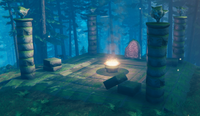
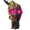
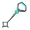

古树长老
本地离线版支持中英文站内搜索。带 ↗ 的链接需联网；中文采用用户词表，各页来源版本见页脚。


古树长老是第二位首领，外形为高耸的人形树木，细长躯体覆树皮，长出许多细枝。
召唤地点


古树长老的弃誓者祭坛位于黑暗林山。可在诡秘墓穴或黑暗林山部分废墟中找到导向符文石，在地图揭示最近召唤位置。
 在黑暗林山的弃誓者祭坛放置三份上古种子即可召唤。与所有首领一样，材料足够就能反复召唤古树长老。
在黑暗林山的弃誓者祭坛放置三份上古种子即可召唤。与所有首领一样，材料足够就能反复召唤古树长老。
袭击与能力
古树长老的环境光环会消除黑暗和降雨。
召唤树根
古树长老举起手臂，在玩家周围半径15米内召唤15条敌对邪煞之根。树根能近战攻击，但无法移动，在18–20秒后或古树长老被击败时消失。最多可同时存在30条，虽然正常游玩通常不会达到。技能冷却25秒，玩家在30米内时可用。
开枪
向目标玩家连射25条藤蔓，每击造成35点穿刺、20点0级砍伐及20点0级镐击伤害。冷却6秒，玩家距离15–50米时可用，瞄准时尝试追踪玩家。每条藤蔓初速度每秒30米，散射角10–20度，最多飞行6秒后消失。
踩踏
近距离大范围践踏，造成60点钝击、1000点0级砍伐及1000点0级镐击伤害，命中落点周围半径5米的圆形区域。玩家在3米内时每5秒可用一次。
战后情景
击败古树长老后，可用沼泽钥匙解锁并进入沼泽墓穴，这是游戏中废铁的主要来源。
掉落物
| 物品 | 0星 |
|---|---|
 古树长老战利品 |
1 |
 沼泽钥匙 |
每名玩家1个 |
遗弃者能力
将古树长老战利品挂在对应石碑上，即可获得他的放逐之力，为玩家及附近盟友提供以下效果，持续300秒：
- 生命值恢复: +30%
- 砍伐 伤害: +60%
- 镐 伤害: +60%
事件
击败古树长老会影响该世界的以下事件：
生物 生成
击败古树长老后，数种生物可在非通常生物群系的夜间生成，只能为0星：
商人
击败古树长老后，霍尔德开始出售雷电石及尤弥尔之身，也可向沼泽女巫以120枚钱币购买林地混合香料。
图片库


说明
- 祭坛提示了召唤材料。首先，“烧掉它们的幼体”指上古种子；此外柱顶雕像的形状也类似远古种子。
- 古树长老位于黑暗林山，因此巨魔或灰矮人等其他敌人可能加入战斗，大幅增加难度，夜间尤其如此。
- 古树长老的高伤害远程攻击可迅速采集木材、圆木、石头及铜矿等资源，无需工具。
- 游戏战利品菜单另有描述：“即使死去，它似乎仍带着洞悉秘密的笑容。”
- 古树长老战利品挂在物品架上时，有时会说：“小小血肉之物，我本该像树枝一样折断你！如今我枯萎死去，让伟大之树收下我……”
古树长老的诸多称号：
森林里的树根在地底下紧紧的缠绕在一起。 拔出其中一根，所有的根茎都会移动。 砍掉一棵树，所有的树都会知道。 让那颗会走的树知道你，他便会开始寻找你的踪迹。
小心点该旧一相.该乌鸦说,在过去的岁月里 他是一个伟大的拍摄世界树本身与一种智慧的力量在该男人们的日子与 树木曾经是好友。 现在他鄙视我该斧与 套装他自己反对该工作成果该诸神自出. 奥丁因为骄傲而把他放逐在这里 但他的根深蒂固
奥丁称王之初，将七个生物放逐至此。七位神与怪物，骄傲得不肯承受其枷锁。我听过森林中古老者的脚步，也在山中母亲飞过时蹲入其影。其他所知甚少，看见更多后会补刻此石。
成就
 古树长老 • “隐藏成就：击败生息森林。”
古树长老 • “隐藏成就：击败生息森林。”The Elder is the second boss. He appears as a towering humanoid tree-like entity with multiple thin branches sprouting out of his slender, bark-covered body.
Summoning
The Elder's Forsaken Altar is located in Black Forests. His location can be revealed when visiting Burial Chambers and sometimes ruined structures around Black Forests, where a Vegvisir will reveal his nearest summoning location on the map.
He is summoned by placing three  Ancient Seeds in his Forsaken altar in Black Forests. Like all bosses, the Elder can be summoned as many times as desired, provided the required materials are met.
Ancient Seeds in his Forsaken altar in Black Forests. Like all bosses, the Elder can be summoned as many times as desired, provided the required materials are met.
Attacks and abilities
The Elder has an environment aura that removes darkness and raining.
Root Spawn
The Elder will raise an arm in the air to summon 15 hostile Roots within a 15-meter radius circle around the player. Roots can attack players in melee range but are otherwise immobile and will despawn after 18–20 seconds or when The Elder is defeated. Although not typically possible in regular gameplay, a maximum of 30 Roots can be active at once. This ability has a 25-second cooldown and can be used while within 30 meters of a player.
Shoot
A ranged volley of 25 vines directed at a target player (35 Pierce, 20 Tier 0 Chop and 20 Tier 0 Pickaxe damage per hit). This attack has a 6-second cooldown and can be used when a player is 15–50 meters away. He attempts to track players while aiming. Each vine has an initial velocity of 30 meters per second and a spread of 10–20 degrees. They can travel for up to 6 seconds before disappearing.
Stomp
A close-range stomp over a large area (60 Blunt, 1000 Tier 0 Chop and 1000 Tier 0 Pickaxe damage). It hits in a circle 5 meters in radius from the impact point. This attack can be used when within 3 meters of a player and is accessible every 5 seconds.
Aftermath
Defeating the Elder allows the player to unlock and enter swamp crypts (which are the primary source of Scrap Iron in the game) with the Swamp Key.
Drops
| Item | 0 Star |
|---|---|
| The Elder trophy | 1 |
| Swamp key | 1 per player |
Forsaken power
Mounting The Elder’s trophy upon his respective stone will allow the player to claim his Forsaken Power. This ability will grant the player and nearby allies the following effects for 300 seconds:
- Health regen: +30%
- Chop damage: +60%
- Pickaxe damage: +60%
Events
Defeating The Elder affects the following events for that world:
- Disables: "The forest is moving..."
- Enables: "A foul smell from the swamp..." (if Bonemass has not been defeated)
- Enables: "The ground is shaking." (if a Troll has died in the world)
Creature spawning
Defeating The Elder unlocks several creatures to spawn at night in unusual biomes. They can only have 0 stars:
- Greydwarf Brute in Meadows.
- Greydwarf Shaman in Meadows.
- Draugr while it is "Misty" in Meadows, Black Forest, Mountain, Plains.
- Odin in Meadows, Black Forest, Plains.
Traders
Defeating The Elder unlocks the Thunder Stone and Ymir Flesh for sale from Haldor. It also unlocks the Woodland Herb Blend from The Bog Witch for 120 Coins.
Gallery
Notes
- The altar provides a few hints on what items are used to summon him. First, the altar reads "Burn their young" referring to Ancient Seeds. In addition, the top of the columns are topped by statues that look similar to Ancient Seeds in shape.
- Because of The Elder's location in the Black Forest, additional enemies such as Trolls or Greydwarfs may join the battle and increase the difficulty significantly, especially at night.
- The Elder's high-damage ranged attack can be effective in quickly gathering resources such as Wood, Corewood, Stone, and Copper Ore, without the use of tools.
- In the in-game trophies menu, there is another description of The Elder, "Even in death, it seems to grin with secret knowledge."
- When The Elder's trophy is mounted on an item mount, he will sometimes say: "Little thing of blood and bone, I should have snapped you like a twig! Now I wither and die, let the great tree have me..."
The many names of The Elder:
- In the game files, The Elder is also known as "gd_king" as well as "theelder". Likely to be interpreted as "Greydwarf King".
- Warnings inscribed in a few of the runestones found in the Black Forest refer to The Elder as "the One Who Walks" once, and "the Old One" twice:
Beneath the ground, the roots of the forest twine together on a great loom. Pluck one thread and the whole weave will move. Chop down one tree and all the wood will know. Make yourself known to the One Who Walks, and he will seek you out.
Beware the Old One. The ravens say that in ages past he was a shoot of great Yggdrasil itself and a force of wisdom in the days when men and trees were friends. Now he scorns the axe and sets himself against the works of the Gods themselves. Odin banished him here for his pride but his roots are deep.
Seven were the creatures banished to this world by mighty Odin in the first days of his kingship. Seven gods and monsters too proud to bear his yoke. I have heard the tread of the Old Ones in the forest and have crouched in the shadow of the Mountain Mother when she flies. Of the others I know little. I will add to this stone when I have seen more.
Achievements
The Elder • "Hidden achievement: Defeat the Living Forest."| Passive | |||||||
|---|---|---|---|---|---|---|---|
| Meadows | |||||||
| Black Forest | Bear • Deer • Ghost • Greydwarf • Greydwarf Brute • Greydwarf Shaman • Rancid Remains • Skeleton • Troll • Brenna • The Elder | ||||||
| Ocean | |||||||
| Swamp | |||||||
| Mountain | |||||||
| Plains | Deathsquito • Fuling • Fuling Berserker • Fuling Shaman • Growth • Lox • Vile • Zil & Thungr • Yagluth | ||||||
| Mistlands | |||||||
| Ashlands | Ashlands Dvergr • Charred Warrior • Charred Marksman • Charred Warlock • Charred Twitcher • Fallen Valkyrie • Bonemaw • Volture • Morgen • Lava Blob • Asksvin • Skugg • Lord Reto • Fader | ||||||
| Deep North | |||||||
| Bosses |
| ||||||
| Spawners | |||||||
| Minions | |||||||
| Fish | Perch • Pike • Tuna • Coral Cod • Pufferfish • Trollfish • Giant Herring • Tetra • Grouper • Anglerfish • Magmafish • Northern Salmon | ||||||
| NPCs |
| ||||||